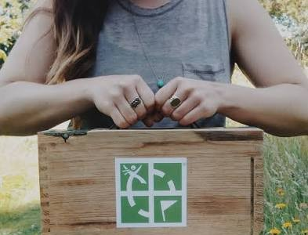

If you're a fan of the great outdoors and enjoy playing hide and seek then this hobby is for you! Geocaching is a hobby about hiding and finding different caches outside in your own town! Caches are different containers that usually have a log inside and some goodies to trade with. When you find one make sure to sign the log with your username and place it back where you found it. Caches come in all shapes and sizes. Some are as small as screws and some are as big as half of your body! To get started all you have to do is get the app and make an account. If you sound even the least bit of interested make sure to check it out.
This will take you off site